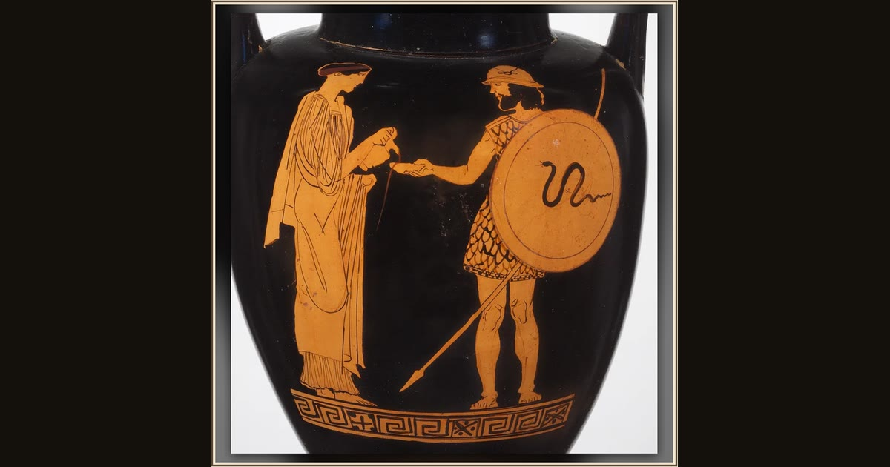

Terracotta Nolan neck-amphora (jar)
Westreenen Painter · ca. 450–440 BCE · met
A painted amphora dated ca. 450–440 BCE shows a warrior with spear and round shield clasping a woman's hand, a departure scene alongside the preparations for war (2.7.1). Explore its place in Thucydides's History of the Peloponnesian War, Book II, chapter 29.